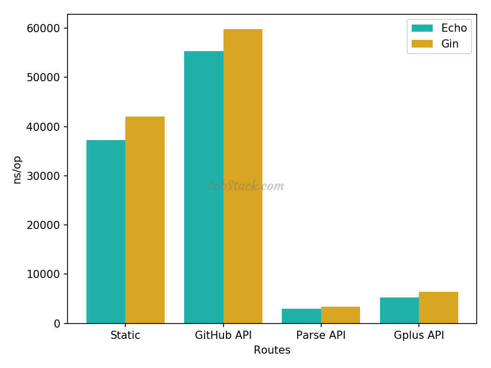

Echo 系列教程——Go 语言 Web 框架 Echo 系列教程
大家好，从今天起，我们一起来学习 Echo 框架。
这几年，随着 Go 语言的发展，各种 Web 框架也出现了。常言道：没有选择是一种无奈，有选择是一种痛苦。所以，大家总是问：Web 框架大佬推荐哪个？
这一年，国内推荐 Gin 的人很多，也让 Gin 的 Star 数增加到了 32k+（2019-10-17），网络上 Gin 相关的教程也很多。总体来说，Gin、Echo 等都比较轻量，易用性也差距不大，而 Gin 最大的一个优势是直接使用了 httprouter ，因此性能很高，从 Gin 项目中的 Benchmark 表格可以看出：
| Benchmark name | (1) | (2) | (3) | (4) |
|---|---|---|---|---|
| BenchmarkGin_GithubAll | 30000 | 48375 | 0 | 0 |
| BenchmarkAce_GithubAll | 10000 | 134059 | 13792 | 167 |
| BenchmarkBear_GithubAll | 5000 | 534445 | 86448 | 943 |
| BenchmarkBeego_GithubAll | 3000 | 592444 | 74705 | 812 |
| BenchmarkBone_GithubAll | 200 | 6957308 | 698784 | 8453 |
| BenchmarkDenco_GithubAll | 10000 | 158819 | 20224 | 167 |
| BenchmarkEcho_GithubAll | 10000 | 154700 | 6496 | 203 |
| BenchmarkGocraftWeb_GithubAll | 3000 | 570806 | 131656 | 1686 |
| BenchmarkGoji_GithubAll | 2000 | 818034 | 56112 | 334 |
| BenchmarkGojiv2_GithubAll | 2000 | 1213973 | 274768 | 3712 |
| BenchmarkGoJsonRest_GithubAll | 2000 | 785796 | 134371 | 2737 |
| BenchmarkGoRestful_GithubAll | 300 | 5238188 | 689672 | 4519 |
| BenchmarkGorillaMux_GithubAll | 100 | 10257726 | 211840 | 2272 |
| BenchmarkHttpRouter_GithubAll | 20000 | 105414 | 13792 | 167 |
| BenchmarkHttpTreeMux_GithubAll | 10000 | 319934 | 65856 | 671 |
| BenchmarkKocha_GithubAll | 10000 | 209442 | 23304 | 843 |
| BenchmarkLARS_GithubAll | 20000 | 62565 | 0 | 0 |
| BenchmarkMacaron_GithubAll | 2000 | 1161270 | 204194 | 2000 |
| BenchmarkMartini_GithubAll | 200 | 9991713 | 226549 | 2325 |
| BenchmarkPat_GithubAll | 200 | 5590793 | 1499568 | 27435 |
| BenchmarkPossum_GithubAll | 10000 | 319768 | 84448 | 609 |
| BenchmarkR2router_GithubAll | 10000 | 305134 | 77328 | 979 |
| BenchmarkRivet_GithubAll | 10000 | 132134 | 16272 | 167 |
| BenchmarkTango_GithubAll | 3000 | 552754 | 63826 | 1618 |
| BenchmarkTigerTonic_GithubAll | 1000 | 1439483 | 239104 | 5374 |
| BenchmarkTraffic_GithubAll | 100 | 11383067 | 2659329 | 21848 |
| BenchmarkVulcan_GithubAll | 5000 | 394253 | 19894 | 609 |
- (1): Total Repetitions achieved in constant time, higher means more confident result
- (2): Single Repetition Duration (ns/op), lower is better
- (3): Heap Memory (B/op), lower is better
- (4): Average Allocations per Repetition (allocs/op), lower is better
然而我下载 Gin 上提供的测试代码，发现 Echo 性能更好（或至少不比 Gin 差），下面是和上面对应的在我本地的测试（MacOS 4核 8G），测试代码：https://github.com/julienschmidt/go-http-routing-benchmark
BenchmarkEcho_GithubAll 35334 34642 ns/op 0 B/op 0 allocs/op
BenchmarkGin_GithubAll 34724 34696 ns/op 0 B/op 0 allocs/op
而且 Echo 上提供的测试结果也表明了这一点（我本地试验了，确实如此）：

为什么是 Echo？
截止 2019 年 10 月 20 日，Gin 的 Star 数高达 32k+，而 Echo 的 Star 数才 15k+，为什么不是选择讲解 Gin 而是 Echo？
我想理由有如下几个：
- Gin 的教程不少，但 Echo 教程不多；
- Echo 1.x 时候，我就用在了 studygolang.com 上，现在更新到了 4.x，studygolang 也升级到了 Echo 最新版；
- 两者都是轻量级框架，而且性能不分伯仲，甚至 Echo 更胜一筹；
- Gin 的 Star 数这么高，跟大家的推广很有关系；作为最早一批使用 Echo 的用户，我认为有必要推广下 Echo，好东西希望更多人学习、使用；
计划
本系列教程计划包含如下部分：
一、基础教程篇
讲解 Echo 的基础使用
二、定制篇
讲解如何定制或扩展 Echo
三、实战篇
通过一个项目讲解 Echo 的实战
四、源码学习篇
分析 Echo 的源码，了解它的设计，看看能领悟、学习到什么